1 марта 1990 года в контору Steve Jackson Games ворвались агенты Секретной службы США. У небольшой компании-разработчика настольных игр были конфискованы компьютеры, жесткие диски, даже карманный калькулятор. Когда владелец фирмы Стив Джексон потребовал объяснений, ему заявили, что Секретная служба охотилась за ролевой игрой GURPS Cyberpunk, где якобы описывались реальные технологии взлома компьютерных сетей. Обвинение еще более абсурдное, чем попытки привлечь Джоан К. Ролинг к ответственности за пропаганду сатанизма.
Стив Джексон опротестовал действия Секретной службы в суде и три года спустя получил 50 тысяч долларов за причиненный его компании ущерб, — а у американских ролевиков и любителей фантастики появился еще один замечательный повод для подшучивания над правительственной паранойей. Кроме того, вся эта история укрепила репутацию Стива Джексона как нонконформиста от настольного игростроя, всегда идущего своим путем — и побеждающего. Пожалуй, только такой неординарный человек смог бы придумать настолько веселую и беспощадную к первоисточникам пародию, как «Манчкин».
| Стив Джексон: «Счет 1:0, и не в пользу Секретной службы!» |
| 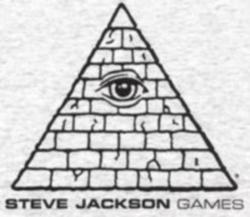 |
| Пирамида с глазом, символ тайного мирового правительства, стала логотипом Steve Jackson Games. |
«Наш» Стив родился в 1953 году (или около того), скорее всего, в Техасе (по крайней мере, именно в этом штате он закончил университет и позже разместил свою фирму). Поработав несколько лет на известного в семидесятые разработчика настолок Metagaming Concepts, в 1980 году выкупил часть бизнеса и основал компанию имени самого себя. Звезда Джексона взлетела стремительно: уже в 1982 году Академия приключенческих игр (именно она присуждает самую престижную для настолок награду Origins) внесла имя Стива в свой Зал славы. А ведь ему еще только предстояло создать игры, за которые мы любим Steve Jackson Games сегодня...
Первым успехом новорожденной конторы стал мини-варгейм Car Wars: он продержался на пике известности все восьмидесятые и сошел со сцены, пожалуй, только потому, что сам Джексон потерял к нему интерес. Затем была выпущена не менее популярная настолка Illuminati, в девяностые переделанная в коллекционную карточную игру. Следом настала очередь универсальной ролевой системы GURPS, которая выдержала уже четыре издания и стала сегодня одной из немногих реальных альтернатив d20 System. Наконец, в первый год нового тысячелетия увидел свет легендарный «Манчкин».
Что такое манчкин, знает каждый любитель настольных РПГ. В буквальном переводе с английского это слово значит «жевун» — именно так звали один из народов страны Оз в книжках Л. Фрэнка Баума. В конце семидесятых, когда ролевые настолки стали набирать популярность, в них пришло изрядное количество начинающих игроков — как правило, весьма нежного возраста. Эти юные создания плохо разбирались и в правилах, и в самой сути ролевой игры, поэтому старшие и опытные товарищи прозвали их жевунами-манчкинами — за малый рост и любопытство. Уловив основы ролевой игры, манчкины начинали придумывать нереалистичных, зато очень мощных персонажей, спорить с ведущим и толковать правила в свою пользу — короче, делали все, чтобы превзойти остальных игроков, а не сработаться с ними. Неудивительно, что такой стиль игры стали называть манчкинизмом, а нормальные игроки взяли за правило сторониться манчкинов, как огня.
Один из образцов ролевого фольклора — так называемый «Список манчкина», где описывается реакция различных игроков на типичные игровые события. Например, встретившись со спящим драконом...
| 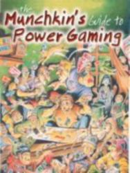 |
| Вы все еще хотите знать, кто такие манчкины? |
| 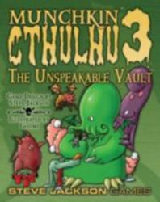 |
| Ням-ням. |
Однако не одним Коваличем славен «Манчкин». В некоторых играх линейки одну-две карты рисовали «приглашенные звезды» — выходило у них не хуже. А в следующем году выйдет новое расширение для Munchkin Cthulhu — The Unspeakable Vault, которое полностью проиллюстрировал французский художник Гуми, автор интернет-комикса, пародирующего рассказы Говарда Ф. Лавкрафта и последователей.
| 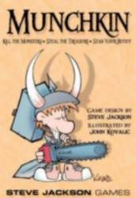 |
| Орки не пройдут! |
| 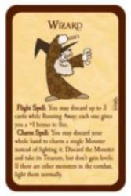 | 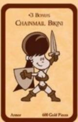 | 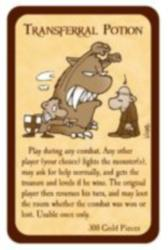 |
| Мочи! | Хапай! | Подставляй! |
Никакой уважающий себя манчкин не откажет себе в удовольствии мочить монстров — пару-тройку, желательно сотен, но можно и десятков. Каждый ход начинается с того, что игрок вскрывает верхнюю карту в колоде Подземелья. Скорее всего, там прячется монстр, с которым придется сразиться. Но есть и другие варианты — например, проклятия или особые карты. Если вы не встретили монстра, можно сыграть его из руки — такого, которого точно сможете победить. А можно и пойти дальше.
Разобравшись с монстром, манчкин первым делом хапает сокровища убиенного — карты из другой колоды. Это может быть как разнообразное снаряжение — оружие, доспехи, — так и «одноразовые» артефакты. И то, и другое помогает в будущих стычках. Кроме того, победа, как правило, добавляет к уровню игрока еще одну единичку, а то и сразу две.
Наконец, для победы над остальными игроками просто-таки необходимо подставлять друзей. Любой игрок может использовать свои артефакты и способности для того, чтобы сделать сильнее монстра, с которым дерется его конкурент, — или ослабить противника. Некоторые карты позволяют даже натравить на соседа второго или третьего монстра. Ну а если манчкин вдруг не справится с врагом, ему придется смываться. Не удерешь от монстра — с тобой сотворят непотребство: хорошо, если просто шмотку отберут, а то и убить могут.
Реалии «Подземелий и драконов» также узнаваемы. Главное в «Манчкине», его альфа и омега — уровень игрока. Всякий манчкин стремится к карьерному росту, хоть и начинает первоуровневым человеком без каких-либо способностей. Чем выше уровень персонажа, тем проще ему одолеть встречных монстров. Добраться до десятого уровня (а это можно сделать как побеждая врага, так и разыгрывая особо ценные карты сокровищ) — значит победить в игре. Перекочевали в «Манчкина» и такие понятия, как расы (люди, эльфы, дварфы, хафлинги) и классы (воины, волшебники, воры, клирики). У каждой расы и каждого класса есть свои особые способности, достоинства и недостатки. Волшебник может усмирить встречного монстра, клирик эффективно действует против андедов, эльфы могут носить клевые шмотки, а гномы — неограниченное количество крупных предметов. Особо надо отметить карты, позволяющие иметь одновременно две расы или два класса, а также возможность в любой неудобный момент отказаться от этих характеристик.
Впрочем, все эти подробности замечательно описаны в правилах. А типичная партия выглядит приблизительно так. Игрок вступает в бой с очередным монстром, и со всех сторон начинается: «А давай я тебе помогу за два сокровища?», «И что мне за это будет?», «Я не буду прокачивать этого монстра, если ты...», «Погодите, вот сейчас как выложу эту карту!»... Когда игроку все это надоедает, он считает до 2,6 — а остальные за это время пытаются претворить свои угрозы в жизнь. Если возникнут спорные ситуации, рекомендуется бросить кубик и поспорить о том, как понимать выпавший результат, а последнее слово всегда остается за хозяином коробки с игрой.
| 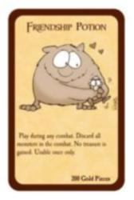 |
| ...А может и такое случиться. |
Словами этого не передать, но играть в «Манчкина» действительно весело. И очень просто: правила занимают всего четыре страницы (в русском издании — семь), а игровые элементы ограничиваются двумя колодами карт и кубиком. В среде ролевиков — а в Штатах это десятки и сотни тысяч! — игра стала культовой сразу после выхода. Поклонники принялись требовать от Steve Jackson Games еще и еще — а Стив Джексон, при всей его бунтарской натуре, от денег не отказывается. Уже в 2002 году появилось расширение Unnatural Axe — еще 112 карт Подземелий и Сокровищ, которые надо было попросту вмешать в обе колоды оригинального «Манчкина». А на сегодняшний день линейка насчитывает уже пять наборов (см. сноску): помимо упомянутых, Clerical Errors, The Need for Steed и De-Ranged. В них появились не только новые монстры и сокровища, но и новые классы (бард, рейнджер), расы (орк, гном) и даже совершенно новый тип карт — ездовые животные. Показательно, что за все это время обновить правила пришлось всего один раз — и то дополнения заняли всего одну страничку. Зато общее число карт перевалило за шесть сотен.
| 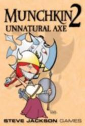 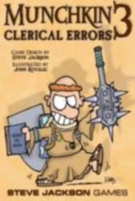 |
| Быстрее, выше, сильнее! |
| 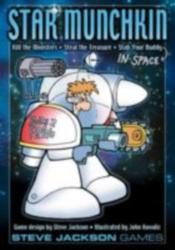 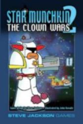 |
| На последнем рубеже. |
| 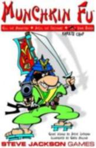 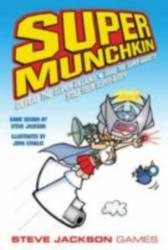 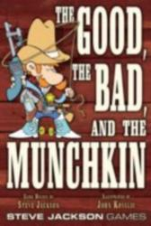 |
| «Наша замечательная группа называется «Сезон забоя пистолета на фрау Дуб». |
Разумеется, все эти игры не были клонами оригинального «Манчкина»: у каждой имелись свои особенности. Например, в Munchkin Fu появились боевые искусства, агенты из Munchkin Impossible могли работать на Штаты, Британию, Россию или Китай, а персонажи Super Munchkin обладали сверхъестественными силами. Однако отличий между всеми этими играми было, по сути, не больше, чем между ролевками, основанными на универсальной механике d20 System. Уже в Star Munchkin игрокам предлагалось на свой страх и риск совместить игру с первым «Манчкином»: населить подземелья роботами и отправить туда киборга-волшебника в скафандре с мечом наперевес. А со временем вышел специальный набор Munchkin Blender, предназначенный для смешивания не менее трех разных «Манчкинов». В правилах «блендера» описывался и вариант игры Epic Munchkin — не до десятого, как обычно, а до двадцатого уровня.
| 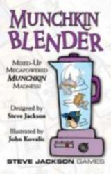 |
| «Манчкин» в блендере. |
«Манчкин» давно уже стал настоящим мультимедийным проектом, не хуже тех игр, фильмов и книг, которые он пародирует. Настоящие фанаты игры приобретают фирменные счетчики уровней, «манчкинские» футболки и закладки, металлические миниатюры... Выпущена даже «Официальная питьевая вода для манчкинов»! Большинство этих аксессуаров — не просто симпатичные сувениры, а полноценные элементы игры. Например, играя в «Манчкина» в фирменной футболке, вы можете раз за партию получить существенный бонус в сражении. Автограф Джексона или Ковалича позволяет сделать это дважды, а оба сразу — трижды.
| Манчкин. Не дай себе проиграть. |
| 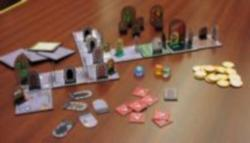 |
| Munchkin Quest: теперь в 3d! |
| 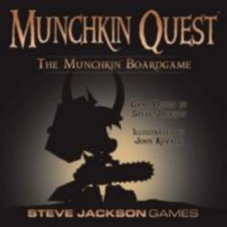 |
| Он уже здесь... |
Конечно, к настольным играм у нас не принято относиться по-взрослому, а «Манчкин» — развлечение явно не для детей. Да и массовой ролевой культуры в России нет. С другой стороны, в последние годы ситуация выправляется; играют роль и компьютерные РПГ, в том числе сделанные по мотивам Dungeons & Dragons. Клирики и дварфы — давно уже не филькина грамота для российского любителя фантастики. А если говорить о многочисленных вариациях «Манчкина», то их судьба в нашем суровом краю представляется еще более радужной: только ленивый не смотрел у нас «Звездные войны», «Человека-паука» или «Миссия: Невыполнима».
Так или иначе, «Манчкин» уже выбрался на отечественный рынок. Стараниями ООО «Смарт» оригинальная игра появилась в продаже пару лет назад, а недавно была заново отредактирована и переиздана. На подходе и «Звездный манчкин»; что же до продолжений и расширений, то судьба будет зависеть исключительно от «голосования рублем».
А там, глядишь, и к D&D люди потянутся.
{kind=link}
{kind=link}
{kind=link}
{kind=link}
{kind=link}
{kind=link}
{kind=link}
{kind=link}
{kind=link}
{kind=link}
{kind=link}
{kind=link}
{kind=link}
{kind=link}
{kind=link}
{kind=link}
{kind=link}
{kind=link}
{kind=link}
{kind=link}
{kind=link}